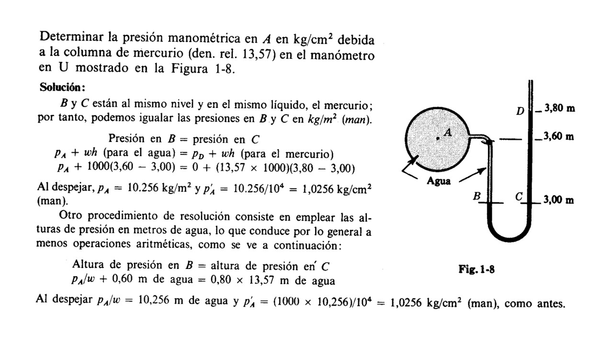
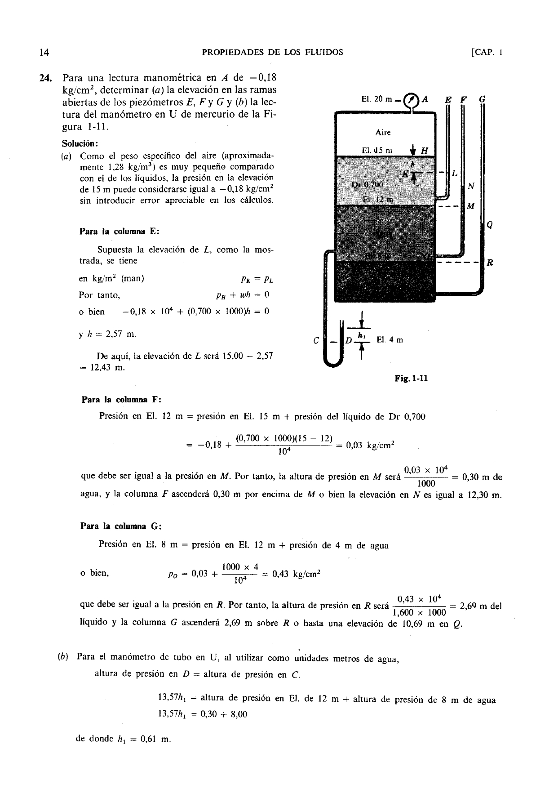

Manometro
El manómetro y la presión manométrica son conceptos fundamentales en la medición y comprensión de la presión en diversos sistemas y aplicaciones. Estas herramientas juegan un papel crucial en campos como la ingeniería, la física y la industria, donde la precisión en la medición de la presión es esencial para el diseño, la operación y el mantenimiento de sistemas y dispositivos. Comprender el funcionamiento del manómetro y la presión manométrica es fundamental para evaluar y controlar la presión en una amplia gama de situaciones.
Un manómetro es un dispositivo utilizado para medir la presión de un fluido en un sistema cerrado o abierto. Se basa en principios físicos como la deformación elástica, el desplazamiento de fluidos o la medición de fuerzas para determinar la presión en el sistema. Los manómetros pueden ser de varios tipos, incluyendo manómetros de tubo Bourdon, manómetros de diafragma y manómetros de tubo en U, cada uno con sus propias aplicaciones y métodos de medición.
La presión manométrica es la presión medida por un manómetro en relación con la presión atmosférica local. Se calcula restando la presión atmosférica del valor medido por el manómetro. La presión manométrica es importante porque proporciona información sobre la presión por encima o por debajo de la presión atmosférica, lo que puede ser crucial para el funcionamiento seguro y eficiente de muchos sistemas.
Los manómetros se utilizan en una amplia variedad de aplicaciones, desde la monitorización de la presión en sistemas hidráulicos y neumáticos hasta la medición de la presión en procesos industriales y la supervisión de la presión sanguínea en aplicaciones médicas. La presión manométrica es particularmente útil en aplicaciones donde la presión absoluta no es crítica, pero donde es importante monitorizar y controlar la presión relativa.
El uso de manómetros y la comprensión de la presión manométrica son esenciales en la ingeniería de sistemas mecánicos, en la industria de procesos químicos y en el diseño de dispositivos médicos, entre otros campos. La precisión y la fiabilidad de los manómetros son fundamentales para garantizar la seguridad y el rendimiento de los sistemas en los que se utilizan.
En conclusión, el manómetro y la presión manométrica son herramientas vitales en la medición y control de la presión en una variedad de aplicaciones industriales, científicas y médicas. Su uso permite a los ingenieros, científicos y profesionales de la salud evaluar y mantener la presión dentro de rangos seguros y eficientes, lo que es fundamental para el funcionamiento adecuado de numerosos sistemas y procesos. La comprensión de los principios detrás del manómetro y la presión manométrica es esencial para la ingeniería y el diseño de sistemas que dependen de una presión precisa y controlada.
Ejercicios
